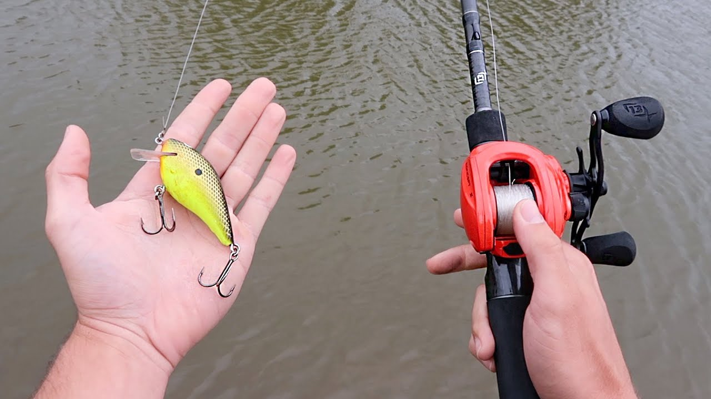
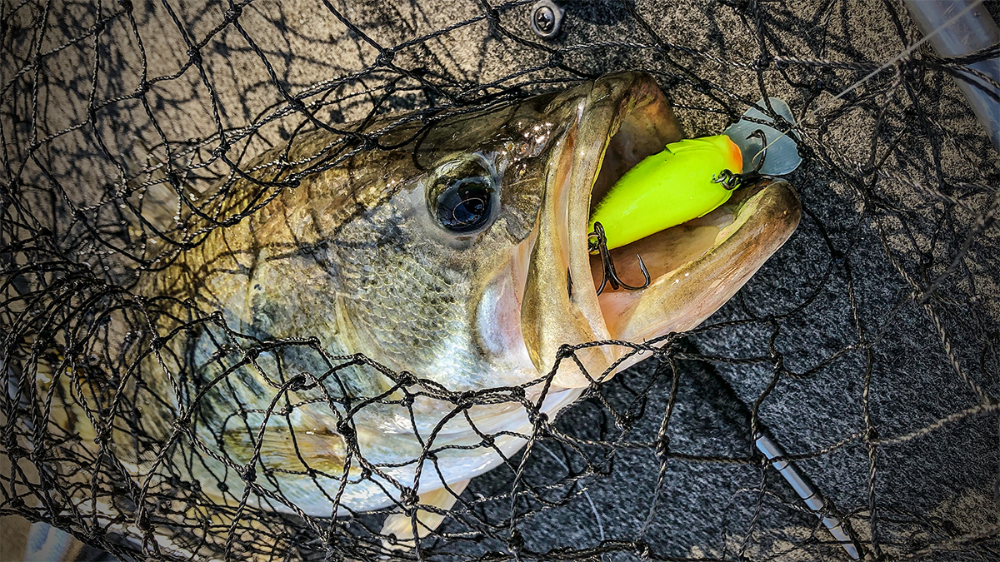

The crankbait is one of the most popular and effective lures in bass fishing. They are perfect for imitating baitfish like shad but can also
look just like bluegill or crawfish. That's one of the reasons they are so popular, and just by changing the type and color, you can match just about any situation
you find yourself in. Aside from the color, knowing about the different styles of baits and what they do is essential to learn as you learn more about the power
of the crankbait.
ROD

Rod, Reel, and Line
For most crankbait fishing, a medium power baitcasting rod with a parabolic taper and moderate action around 7 feet in length will handle most of your needs.
A medium-light rod with a little faster tip can be great for shallow cranks and square bills target casted to shallow banks, rocks, wood cover, etc.
While a bit heavier power and longer rod is nice for heavier deep diving crankbaits. A lot of guys throw big deep divers on medium-heavy moderate rods as
long as 8 feet to get not only more distance but to handle the load of much heavier super deep divers.
REEL
A lower gear ratio baitcaster reel is helpful. It will take some of the torque out of your hand which results in a lot less fatigue. And it will help you fish
the crankbait at a more optimal speed. Something with a 5 or 6:1 gear ratio is preferred.
I prefer a low profile casting reel, and 90 percent of the time I don’t want to overwork the lure.
That means a slower to medium retrieve rate, usually 5.4:1 to 7:1. I’m in love with a 6.6:1 or 6.8:1. That covers most of my cranking needs.
LINE
Your last consideration is line. As you probably know, there are three main choices – braid, monofilament and fluorocarbon.You can use all three, but I prefer mono or fluoro only.
Braid has no stretch, and it’s not forgiving. You’ll lose too many fish.My basic rule is that if I want the bait to run shallower or stay higher in the water column, I’ll use mono.
Usually that means 10 to 17 pound test. However, for probably 75 percent of my cranking I use fluoro. It’s got stretch, but not too much
Also, it’s invisible and highly abrasion-resistant. Finally, and perhaps most importantly, it’s dense so it sinks. That achieves greater depth and provides more action.
Give a man a fish, and he has food for a day; teach him how to fish, and you can get rid of him for the entire weekend." - Zenna Schaffer
How & When To Crankbait!

Great Search Bait!
Starting at the end of winter when water temps start approaching 50 degrees, we will move shallow and start looking for bass moving out of deeper winter patterns and moving to shallow
areas to forage before the spawn. Look for warmer dirtier water being warmed by warmer spring rains. And then look for shallow cover. I like a lot of craw patterns and contrasty colors
in the spring. As the water warms up I will transition from flat sides and thin shad style finesse crankbaits to more round body square bill crankbaits fished around wood cover and grass.
As the fish migrate out of spawning areas back to the main lake as the water warms, schools will start to gang up offshore on humps, ledges, creek channel breaks, points and other offshore high
spots to herd bait as a group and feed. I turn to my deep diving crankbaits from 10 to 20 feet depending on what is a common high spot depth near to a deep drop off. I fish crankbaits a lot
faster in the summer. I like to get the fish in and out of the strike zone fast so they only have a split second to react to it.
Crankbaits can be a little trickier to fish from the shore. Fish more parallel and use crankbaits that float well. Fish along steadily and when you contact cover, pause to let the bait clear.
I will keep some 3/4 ounce bell sinkers on big clips in my pocket. If I get hung, I will get my line tight, clip on a weight and try to slide it down to the crank fast to pop it off. It takes a
bit of practice but if you can learn to hold your line tight without really pulling the bait hard into the cover, you will be surprised how many you can knock free.